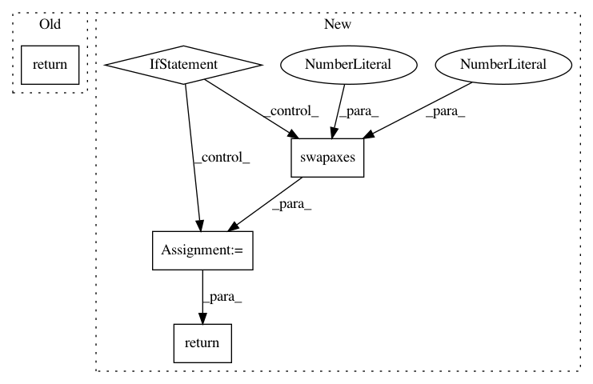

8df47901fbae1c93bcec58a9a658a6a3ad9f5d07,pymc3/variational/flows.py,ReferencePointFlow,logdet,#ReferencePointFlow#,303
Before Change
har = h(a, r)
dar = deriv(a, r)
det = (1. + b*har)**(d-1) * (1. + b*har + b*dar*r)
return tt.log(det)
class Radial(FlowFn):
@staticmethod
After Change
z = self.z0 // sxd
h = self.h // h(a, r)
deriv = self.h.deriv // h"(a, r)
if self.is_local:
z = z.swapaxes(0, 1)
r = (z - z_ref).norm(2, axis=-1, keepdims=True) // s
har = h(a, r)
dar = deriv(a, r)
logdet = tt.log((1. + b*har)**(d-1) * (1. + b*har + b*dar*r))
if self.is_local:
logdet = logdet.sum(0)
return logdet
class Radial(FlowFn):
@staticmethod
In pattern: SUPERPATTERN
Frequency: 4
Non-data size: 5
Instances
Project Name: pymc-devs/pymc3
Commit Name: 8df47901fbae1c93bcec58a9a658a6a3ad9f5d07
Time: 2017-09-02
Author: maxim.v.kochurov@gmail.com
File Name: pymc3/variational/flows.py
Class Name: ReferencePointFlow
Method Name: logdet
Project Name: dmlc/gluon-nlp
Commit Name: 3c874575bf40e8b1fa2280371131a8f29ebb3e98
Time: 2020-07-28
Author: xshiab@connect.ust.hk
File Name: src/gluonnlp/models/mobilebert.py
Class Name: MobileBertModel
Method Name: hybrid_forward
Project Name: dmlc/gluon-nlp
Commit Name: 3c874575bf40e8b1fa2280371131a8f29ebb3e98
Time: 2020-07-28
Author: xshiab@connect.ust.hk
File Name: src/gluonnlp/models/roberta.py
Class Name: RobertaModel
Method Name: hybrid_forward
Project Name: pymc-devs/pymc3
Commit Name: 8df47901fbae1c93bcec58a9a658a6a3ad9f5d07
Time: 2017-09-02
Author: maxim.v.kochurov@gmail.com
File Name: pymc3/variational/flows.py
Class Name: ReferencePointFlow
Method Name: forward